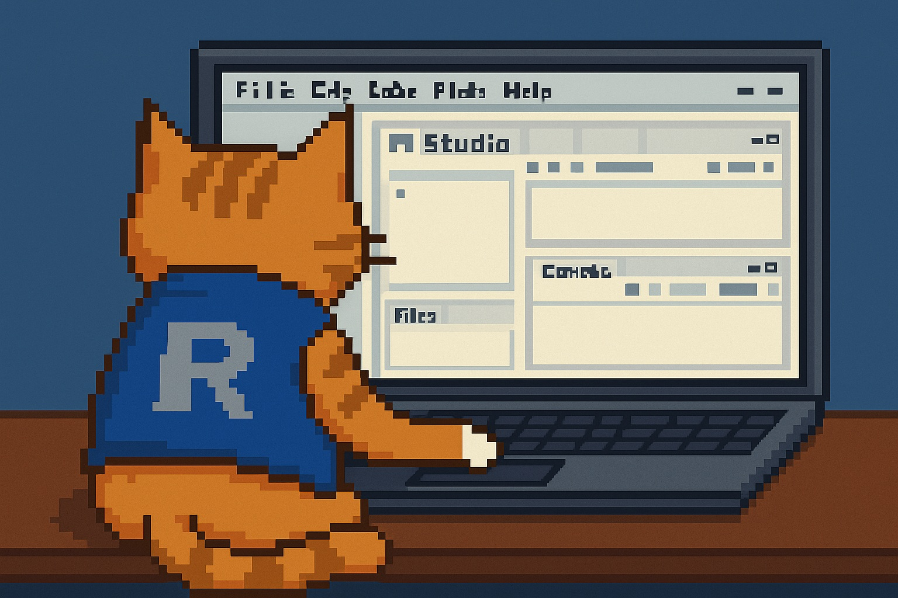

In scientific and engineering modeling it is very common to run computations that take hours: overnight simulations, parameter fitting, Monte Carlo experiments, or long-running machine learning jobs. You start the script, make sure everything looks fine, and walk away.
Then the operating system decides to go to sleep.
When that happens, the computation is paused or effectively stopped. In the morning you come back to an unfinished run and lost time. This is not a rare edge case - it is a very common and very frustrating failure mode when working on laptops or workstations.
Why disabling sleep globally is not a great solution
There are obvious ways to deal with this problem:
- disable sleep in system settings,
- run
caffeinateon macOS, - enable an "awake" mode using system tools or third-party utilities.
These approaches work, but only at a very coarse level. They keep the system awake indefinitely and have no idea when your computation has actually finished. As a result, the machine may stay awake long after the job is done, wasting power and requiring manual cleanup.
In practice, this often turns into a trade-off between reliability and convenience: either risk losing the computation, or remember to manually manage system sleep every time.
The problem is better solved at the script level
A key observation is that this is not really an operating system problem, it is a scripting problem.
Your script knows exactly when the computation starts and when it ends. That means the script itself can request sleep prevention at the beginning of the run and release it as soon as the work is complete. If something goes wrong and the script exits early, it can still clean up properly.
This leads to a much more precise and reliable solution: keep the system awake only while the computation is actually running, and automatically restore normal system behavior afterward.
One idea, implemented for three languages
Based on this idea, we implemented the same solution for three languages that are commonly used in scientific and systems modeling: R, Julia, and MATLAB.
All three implementations are called NoSleep. They follow the same conceptual design and expose a very similar interface, even though the languages and ecosystems are different.
The goal was not to create three unrelated utilities, but to provide a consistent solution that works across environments often used in the same modeling workflows.

Design principles behind NoSleep
All NoSleep implementations share a few core principles:
- They rely exclusively on native operating system mechanisms:
Power RequestAPI on Windows,caffeinateon macOS,systemd-inhibiton Linux.
- No hacks, no simulated mouse movement, no background tricks.
- Fully cross-platform: Windows, macOS, and Linux.
- Automatic cleanup: sleep prevention is released when the computation finishes or fails.
- Open source and published through standard channels.
- No external runtime dependencies.
The intention is to cooperate with the operating system rather than fight it, and to keep the behavior explicit and predictable.
Using NoSleep inside your scripts
NoSleep is designed to be used directly inside your code:
- You can wrap a block of code and keep the system awake only for the duration of that block.
- You can manually enable and disable sleep prevention around long-running sections.
- The behavior is deterministic and reproducible, which makes scripts easier to share and reuse on other machines.
Because sleep control lives inside the script, it does not depend on external tools, system settings, or manual intervention.

Cross-language framework
All three implementations of NoSleep share the same basic API design, making it easy to switch between languages while keeping the same approach to sleep prevention.
R
Repository:
https://github.com/hetalang/NoSleepR
CRAN:
https://cran.r-project.org/web/packages/NoSleepR/index.html
Installation:
install.packages("NoSleepR")
library(NoSleepR)Simple usage:
nosleep_on() # nosleep_on(TRUE) sets display activity
# Long computation here
nosleep_off()Block usage:
with_nosleep({
# Long computation here
})Julia
Repository:
https://github.com/hetalang/NoSleep.jl
Julia Registry:
https://juliahub.com/ui/Packages/General/NoSleep
Installation:
]add NoSleep
using NoSleepSimple usage:
nosleep_on() # nosleep_on(keep_display=true) sets display activity
# Long computation here
nosleep_off()Block usage:
with_nosleep() do
# Long computation here
endMATLAB
Repository:
https://github.com/hetalang/NoSleepMatlab
File Exchange:
https://www.mathworks.com/matlabcentral/fileexchange/183008-nosleep
Installation:
Find in File Exchange and follow instructions.
Simple usage:
import NoSleep.*
nosleep_on(); % nosleep_on(true) sets display activity
% Long computation here
nosleep_off();Block usage:
function myLongComputation()
% Long computation here
end
with_nosleep(@() myLongComputation());When NoSleep is useful, and when it isn't
NoSleep does not make your code faster, and it does not replace proper job schedulers or cluster infrastructure. It is not meant for large distributed systems or remote compute environments.
What it does is eliminate a very common and very annoying failure mode in long local computations. In practice, small tools that quietly do one thing well often end up being used far more often than expected, simply because they remove friction from everyday work.